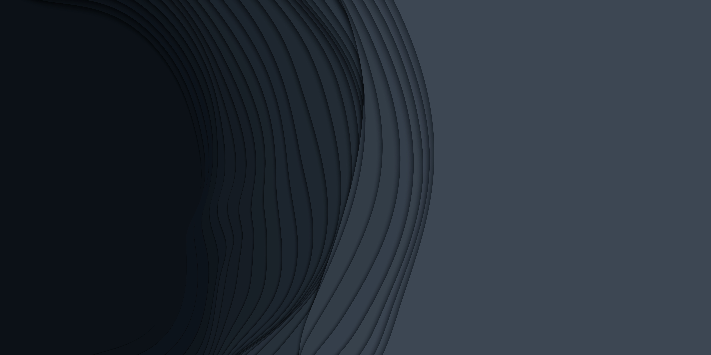

EMS kreslo
EMS (inkontinenčné elektromagnetické kreslo) kreslo využíva technológiu vysokovýkonného fokusovaného elektromagnetického poľa na stimuláciu hlbokých svalov panvového dna a obnovenie neuromuskulárnej kontroly. Kľúčom k účinnosti je fokusácia elektromagnetickej energie, hĺbka prieniku a stimulácia celého panvového dna. Počas jedinej terapie dochádza k tisícom supramaximálnych kontrakcií svalov panvového dna, čo je extrémne dôležité pri reedukácii svalov u inkontinentných pacientov.
EMS

EMS Mini

EMS Magic

Oslabenie svalov panvového dna nastáva nielen s pribúdajúcim vekom, ale aj tehotenstvom, pôrodom, menopauzou, cvičením, obezitou či dvíhaním ťažkých bremien, pooperačne. V dôsledku toho sa môžu ako u žien tak aj u mužov dostaviť problémy s únikom moču (inkontinenciou), častým močením či problémy v intímnom živote. Preto je dôležitá stimulácia a rehabilitácia nervov a posilňovanie svalov panvového dna.
STARNUTIE, PÔRODY A MENOPAUZA MÔŽU VIESŤ K INKONTINENCII
Pred: Svaly panvového dna neposkytujú dostatočnú podporu orgánom, čím negatívne ovplyvňujú kontrolu močového mechúra.
Behom terapie: EMS kreslo kontrakciami účinne stimuluje svaly panvového dna
Po: Stimulácia vedie k znovunadobudnutiu kontroly nad svalmi panvového dna a lepšiemu ovládaniu močového mechúra.
INFEKCIE, RAKOVINA PROSTATY ČI STRES MÔŽU MAŤ NEGATÍVNY VPLYV NA VAŠE INTÍMNE ZDRAVIE
Pred: Svaly panvového dna neposkytujú dostatočnú podporu orgánom, čím negatívne ovplyvňujú kontrolu močového mechúra.
Behom terapie: EMS kreslo účinne ovplyvňuje svaly panvového dna a zvyšuje prekrvenie.
Po: Stimulácia vedie k znovunadobudnutiu kontroly nad svalmi panvového dna a lepšiemu ovládaniu močového mechúra.
Výhody:
Opravuje a napína panvové dno, čím pomáha mužom a ženám získať kontrolu nad močovým mechúrom. Posilnené svaly panvového dna zlepšujú sexuálnu spokojnosť a schopnosť dosiahnuť orgazmus. Zlepšenie možno pozorovať už po jedinom sedení a výsledky sa zlepšujú počas obdobia liečby. Neinvazívny zákrok bez času na rekonvalescenciu. Počas liečby zostáva pacient úplne oblečení. Žiadna bolesť - počas liečby môžete čítať časpopis.
Pre mužov aj ženy s únikom moču, so syndrómom chronických panvových bolestí, so slabosťou svalov panvového dna, s hyperaktívnym močovým mechúrom, pre skvalitnenie intímneho života, pre mužov ako podporná liečba erektilnej dysfunkcie, vhodné aj pre ženy po pôrode na včasnú rehabilitáciu panvového dna, formovanie svalov sedacej časti a pre ženy v menopauze.
-pre osoby po výmene bedrových kĺbov
-pre osoby s kovovými implatátmi v oblasti širšieho okolia panvy
-pre osoby s kardiostimulatorom
-pre osoby s infekciou močových ciest
- pre osoby s infekciou v panvovej oblasti
- pre osoby s hemoroidmi
- pre osoby so zmyslovými alebo kognitívnymi poruchami
- Pre ženy s vaginálnym krvácaním
- Pre ženy v čase menštruácie
- pre ženy v čase tehotenstva
- pre osoby s epilepsiou
- pre osoby po operácii (do 3 týždňov)
- pre osoby s malígnymi nádormi v oblasti stimulácie
Kľúčom k účinnosti je sústredenie elektromagnetickej energie, hĺbka prieniku a stimulácie celého panvového dna. Počas jedinej terapie EMS dochádza k tisíckam kontrakcií svalov panvového dna, vrátane zvieračov močovej rúry a konečníka, čo je extrémne dôležité v reedukácii svalov u pacientov trpiacich inkontinenciou moču a stolice. Počas ošetrenia budete pociťovať kontrakcie svalov panvového dna, čo vedie k ich posilneniu. Zlepšenie môžete pozorovať i po jednom ošetrení. Výsledky sa typicky dostavia v priebehu 4-6 týždňov. Štandardná kúra obsahuje aspoň 6 sedení, ktoré je vhodné časovať 1-2 krát týždenne Ideálne riešenie je aspoň 8-10 sedení: prvých 6 ošetrení 1-2 x týždenne, následne 2 sedenia za mesiac
Po procedúre nie sú žiadne obmedzenia. Môžete pociťovať " svalovicu " svalov panvového dna, ako po cvičení. Dôjde k zlepšeniu kontroly nad močovým mechúrom, zvieračom močovej rúry. Dochádza k ústupu symptómov dráždivého močového mechúra - ústupu nadmerného nutkania na močenie a k ústupu častého močenia u žien, takisto aj zlepšenie pôžitku z intímneho styku a spevnenie panvového dna po pôrode. U mužov dochádza k spevneniu a prekrveniu panvového dna, k zlepšeniu stavov erektilnej dysfunkcie, k zlepšeniu ejakulácie a k liečbe chronických panvových bolestí.
O nás
Sme firma, ktorá sa špecializuje na predaj inovatívneho elektromagnetického kresla EMS.
Naša spoločnosť bola založená s cieľom priniesť revolučné riešenia pre zdravie a pohodu ľudí trpiacimi tažkosťami ako sú problemý s panvovým dnom. Našou víziou je zlepšiť kvalitu života ľudí prostredníctvom pokročilých technológií, ktoré sú dostupné a efektívne.
Veríme, že zdravie panvového dna je dôležitou súčasťou celkového zdravia a pohody, a preto sa zameriavame na poskytovanie najmodernejších terapeutických riešení.
EMS kreslo je naším hlavným produktom, ktorý ponúka neinvazívnu liečbu močovej inkontinencie a posilňuje panvové svaly pomocou elektromagnetických pulzov. Zameriavame na kvalitu, dôveryhodnosť a osobný prístup.
Sme tu, aby sme vám pomohli porozumieť našim produktom a ich výhodám. Sme pripravení poskytnúť vám všetky potrebné informácie a podporu.